Moléculas interestelares: la química del cosmos
La última clase del módulo cierra el círculo: cómo las estrellas fabrican los elementos (nucleosíntesis), cómo esos elementos hacen química en el medio interestelar, y cómo la vibración y la rotación de las moléculas — cuantizadas como todo en el mundo microscópico — generan los espectros roto-vibracionales que nos dejan leer esa química desde la Tierra. Del proceso triple alfa a los fulerenos, los aminoácidos y el oxígeno del universo bebé.
El módulo ya mostró el medio interestelar, el polvo, el CO como termómetro y el colapso que forma protoestrellas. Esta clase — «tal vez la más técnica de las cinco», advierte el profesor — formaliza la pieza que faltaba: las moléculas mismas. Para entenderlas hay que separar dos historias que suelen confundirse: la nucleosíntesis (física nuclear: cómo se fabrican los elementos dentro de las estrellas) y la química (cómo esos elementos, ya liberados al espacio, forman moléculas). Y para verlas hay que entender tres tipos de transición — electrónica, vibracional y rotacional — con energías que difieren en factores de cien y de mil.
Apertura: tiempo, gravedad y modelos
La conversación inicial — una digresión con moraleja metodológica.
La clase partió con una conversación a propósito de otro curso del diplomado: el tiempo no es absoluto — se dilata por gravedad o por velocidad — y los relojes atómicos lo miden tan bien que se han detectado diferencias de dilatación con apenas ~40 cm de diferencia de altura. «El tiempo de su cabeza es más joven que el de sus pies», resume el profesor.
De ahí saltó una pregunta de fondo: ¿la gravedad es una fuerza de atracción o es la curvatura del espacio-tiempo? La respuesta del profesor es la moraleja metodológica de toda la clase:
La gravedad se puede modelar como una fuerza (se define energía potencial, se trabaja con momentos, la fórmula F ∝ Mm/r² da resultados correctos), y se cuenta entre las cuatro fuerzas fundamentales. Pero el gran descubrimiento de Einstein fue que, en sentido estricto, no es una fuerza atractiva: es la deformación del espacio-tiempo. Por eso la luz «cae» en un agujero negro aunque el fotón no tenga masa: sigue el único camino disponible en un espacio curvado. Uno «se enamora del modelo y piensa que el modelo es la realidad — pero el modelo no es la realidad». La ley del inverso del cuadrado es, al final, una consecuencia de la geometría del espacio.
- A diferencia de las otras fuerzas fundamentales, la gravedad es solo atractiva.
- Unificar gravedad y mecánica cuántica (cuantizar la gravedad) sigue siendo un problema abierto de la física.
- El corrimiento al rojo tiene dos causas distintas: el efecto Doppler (velocidad relativa entre fuente y observador) y el corrimiento cosmológico — el espacio mismo se estira y estira las ondas que viajan por él. Se parece al Doppler pero no lo es: «no es la galaxia la que se mueve con respecto al espacio, es el espacio mismo el que se estira».
El consejo de «no enamorarse del modelo» es la versión física de «all models are wrong, some are useful»: la gravedad newtoniana es como una API estable cuyo contrato (resultados numéricos) se cumple casi siempre, pero cuya implementación interna (fuerza a distancia) resultó ser otra (geometría). Mientras trabajes dentro del dominio de validez, la abstracción no se filtra; en regímenes extremos (agujeros negros, GPS, relojes atómicos) la leaky abstraction aparece y necesitas el modelo de más bajo nivel.
Dos ramas del enriquecimiento químico
Nucleosíntesis (física nuclear) vs. química (moléculas): la distinción que ordena la clase.
Cuando se habla de la «química del universo» hay que distinguir dos procesos completamente distintos:
| Nucleosíntesis | Química (molecular) | |
|---|---|---|
| Qué es | Formación de elementos químicos: cambia la identidad del núcleo | Formación de moléculas: los átomos se enlazan sin cambiar de identidad |
| Qué disciplina | Física nuclear («alquimia de verdad»: transforma un elemento en otro) | Química propiamente tal |
| Dónde ocurre | Big Bang (H, He) e interior de las estrellas (el resto) | Medio interestelar: granos de polvo y fase gaseosa |
| Ejemplo | Tres núcleos de helio se fusionan en un carbono | Un carbono y un oxígeno se enlazan en CO |
La identidad química la da el número de protones del núcleo: cualquier núcleo con 2 protones es helio (tenga los neutrones que tenga); cualquier núcleo con 6 protones es carbono. La nucleosíntesis cambia ese número; la química nunca lo toca. Una vez que un carbono fabricado dentro de una estrella «sale al mundo» — generalmente vía explosión de supernova o eyección al medio interestelar — recién entonces puede hacer química: juntarse con hidrógeno, con oxígeno, con otros carbonos.
Para el profesor, la nucleosíntesis es uno de los conocimientos más fundamentales que la astrofísica ha aportado a la ciencia: poder explicar de dónde viene cada elemento — el H y la mayor parte del He del Big Bang, todo el resto del interior de las estrellas. La astronomía, recuerda, es una rama de la física como lo son la mecánica cuántica o la mecánica estadística.
Hoyle y el proceso triple alfa
La historia de cómo se descubrió que las estrellas fabrican los elementos.
En los años 30, cuando nace la teoría del Big Bang (la idea del «átomo primigenio»), se asumía sin mucho cuestionamiento que el Big Bang había creado todos los elementos químicos en las proporciones observadas, y que todas las estrellas tenían esencialmente la misma composición. Pero al espectroscopiar estrellas empezaron a aparecer estrellas con muy pocos «metales» (en astronomía, todo elemento más pesado que el helio es un «metal») — la composición no era universal.
Entra Fred Hoyle, astrofísico inglés — el mismo que inventó el término Big Bang en una entrevista radial de la BBC para burlarse de la teoría («el gran pum»), y la ironía del destino dejó el nombre pegado para siempre. Hoyle prefería un universo eterno y quiso demoler el Big Bang demostrando que las estrellas, no el Big Bang, fabrican los elementos.
El problema de las masas 5 y 8
Ya se sabía (años 30) que las estrellas generan energía fusionando hidrógeno en helio — la cadena p-p, que termina produciendo partículas alfa (núcleos de helio: 2 protones + 2 neutrones). Antes se creía que el Sol «quemaba» algún combustible, pero cualquier combustible químico (carbón, madera) con la masa del Sol (~2×10³⁰ kg) dura apenas miles de años brillando — y el registro fósil ya daba a la Tierra miles de millones. Solo la fusión nuclear cierra las cuentas.
¿Y después del helio? En un universo de H y He, una partícula alfa solo puede chocar con un protón (→ núcleo de masa 5) o con otra alfa (→ masa 8). Y ambos núcleos son tan inestables que se deshacen en nanosegundos. La escalera de la fusión parecía cortada en el segundo peldaño. (Por eso, dicho sea de paso, el berilio y el boro casi no se fabrican en estrellas: sus núcleos en esa zona de masas son inestables; solo quedan trazas, del orden de una parte en cien millones.)
La salida: tres alfas a la vez
Hoyle propuso que las estrellas se las arreglan de todos modos: si tres partículas alfa se fusionan casi simultáneamente, se forma un núcleo de carbono, que sí es estable. Es improbabilísimo — ya cuesta que se junten dos — pero en el núcleo de una gigante roja, contraído por gravedad desde ~15 millones de grados (el Sol hoy) hasta 100–200 millones de grados, ocurre. Junto a un físico teórico y dos astrónomos observacionales, Hoyle demostró las cadenas de nucleosíntesis estelar. Es el proceso triple alfa.
Cuando el núcleo agota su hidrógeno (la estrella solo consume ~10% de todo su hidrógeno total), deja de generar energía, pierde la presión térmica y la gravedad empieza a ganar: el núcleo se contrae y se calienta. Una capa de hidrógeno alrededor del núcleo se enciende y genera más energía que antes — eso infla la estrella hasta gigante roja. Mientras tanto el núcleo sigue contrayéndose hasta los cientos de millones de grados del triple alfa: la estrella «agarra un segundo aire» y ahora fabrica carbono, nitrógeno y oxígeno.
Todos los elementos, incluido el helio, pueden fabricarse en estrellas — pero la mayor parte del helio es primordial. El hidrógeno, en cambio, es 100% del Big Bang: las estrellas lo consumen, no lo producen. «Todo el hidrógeno de nuestro cuerpo viene del Big Bang. Si quieren ver algo viejo, mírense al espejo.»
Vidas estelares: enanas blancas y estrellas de neutrones
Gravedad vs. presión, una y otra vez — y qué decide el final.
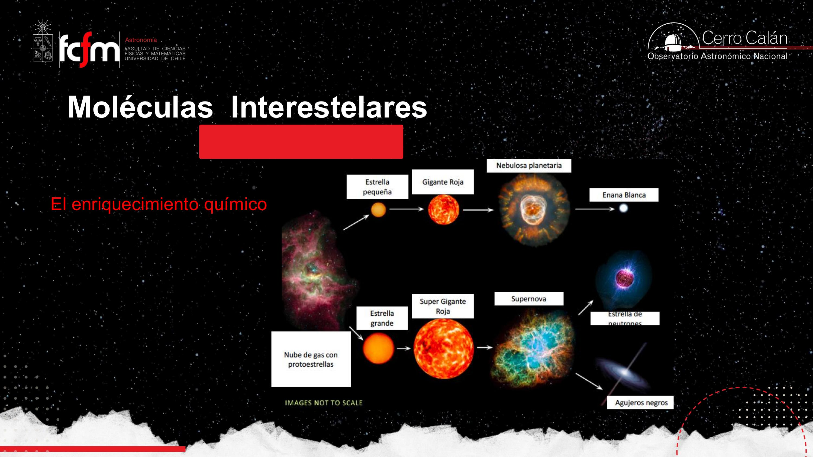
Todo el ciclo es la misma guerra repetida: gravedad vs. presión. Hoy el Sol está en equilibrio hidrostático porque la fusión genera presión térmica. Cuando se acaba el combustible del núcleo, gana la gravedad, el núcleo se contrae y se calienta hasta encender el siguiente combustible… si la masa alcanza.
- Estrella tipo Sol: tras el helio (→ C, N, O) la masa no alcanza para encender el carbono (~200 millones de grados no bastan). La gravedad comprime hasta que choca con un muro cuántico: la presión de degeneración electrónica. Resultado: enana blanca.
- Estrella masiva: el ciclo continúa — silicio, magnesio, calcio… hasta el hierro. La gravedad es tanta que vence incluso a los electrones: los empuja dentro de los protones, formando neutrones. Resultado: estrella de neutrones (o agujero negro si hay aún más masa).
Los electrones no pueden ocupar todos el mismo estado de energía (principio de exclusión de Pauli). La analogía del profesor: los estados de energía son asientos de un auditorio — una vez ocupado uno, nadie más puede sentarse ahí. Cuando la gravedad «acorrala» a los electrones, estos se ven obligados a apilarse en energías cada vez mayores, y esa resistencia es una presión real que detiene el colapso — sin generar energía nueva.
Un fluido ionizado: las cargas están separadas — los electrones viven su vida aparte de los núcleos. ¿Por qué no se recombinan si se atraen? Porque temperatura alta = energía cinética alta = velocidad alta: «es como querer que dos personas se tomen de la mano corriendo a 40 km/h — pasan de largo, no alcanzan ni a saludarse». Solo cuando el gas se enfría (las «personas» caminan) los electrones se capturan y se forman átomos. Un plasma puede ser globalmente neutro.
Nebulosa planetaria: un final «gentil»
El final tipo Sol no es una explosión. Al inflarse a gigante roja, la gravedad superficial de las capas exteriores se desploma — la gravedad depende de la masa pero del radio al cuadrado, y el radio es la variable dominante. Las capas externas casi no sienten gravedad, mientras el núcleo caliente las bombardea con fotones: las partículas ganan energía cinética y se evaporan suavemente. Esa envoltura en expansión es la nebulosa planetaria; lo que queda al centro, la enana blanca.
El Sol vivirá en total unos 10 mil millones de años: ~9 mil millones en la secuencia principal, y el resto — gigante roja, rama horizontal, rama asintótica, nebulosa planetaria, enana blanca — en apenas decenas a cientos de millones de años. (La transcripción dice «10 millones»; por las diapositivas y el contexto del curso, son 10⁹ años — el error es de la transcripción automática.)
Composición del medio interestelar
Repaso express: qué hay disponible para hacer química.
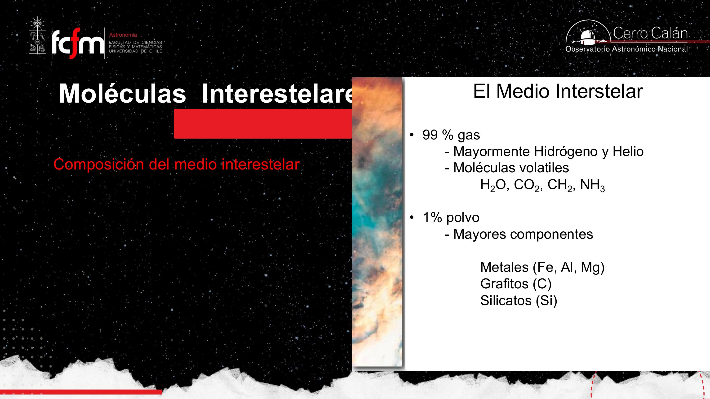
- En masa: ~74% hidrógeno, ~25% helio, ~2% elementos pesados («metales»). Tres cuartos del universo sigue siendo hidrógeno.
- El helio casi no participa en la química: es un gas noble, no reacciona con nada.
- El polvo es el 1% — pero ya vimos en clases anteriores que es el laboratorio donde se fabrica el H₂ y donde se «instiga» la formación de moléculas.
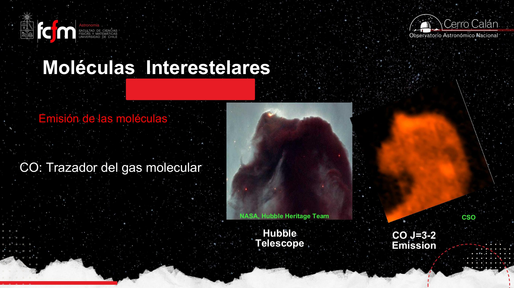
Repaso: transiciones electrónicas y modelo de Bohr
La base atómica antes de pasar a las moléculas.
Como las moléculas están compuestas de átomos, y en los átomos ocurren transiciones electrónicas, en principio las moléculas podrían detectarse en el visible y el ultravioleta mediante líneas de absorción. Repaso del modelo de Bohr para el hidrógeno:
- Las «órbitas» del electrón son en realidad niveles de energía cuantizados: solo ciertos valores están permitidos. Lo que importa del electrón, dice el profesor, no es dónde está sino qué energía tiene — es «el parámetro» que lo describe, como la edad o la estatura describen a una persona.
- Para saltar del nivel 2 al 3, el electrón debe absorber un fotón con la energía exacta del salto — ni más ni menos. Por eso los espectros tienen líneas a longitudes de onda precisas.
- Al caer de vuelta, emite un fotón de exactamente esa misma energía.
- Los saltos también pueden excitarse por choques (colisiones), no solo por fotones — eso será clave dentro de las nubes.
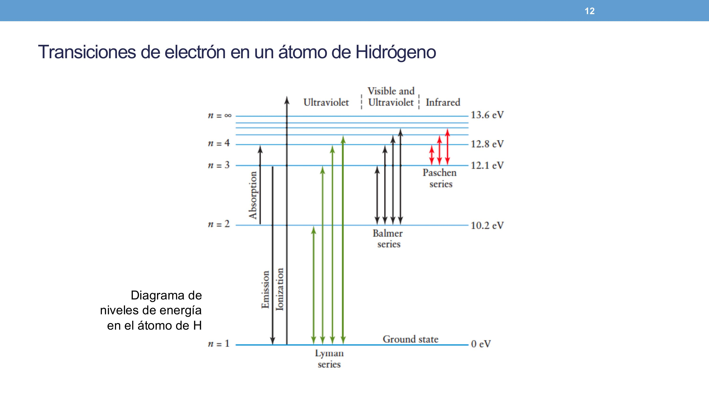
El electronvolt (eV) es la unidad de energía favorita de la física de partículas: la energía que gana un electrón acelerado por 1 volt. El estado fundamental (ground state) se toma como cero por conveniencia — lo que importa son las diferencias. Y el continuo de un espectro es luz en todas las longitudes de onda (función continua, como el tiempo), sobre el cual las líneas de absorción aparecen como «mordidas» discretas — como el número de personas en una sala, que solo toma valores enteros.
Vibrar y rotar: tres escalas de energía
Por qué las moléculas no se ven en el óptico — y sí en el infrarrojo y el radio.
Aquí viene el giro central de la clase: bajo las condiciones de temperatura y densidad del espacio, las transiciones electrónicas no ocurren en las moléculas. En las nubes moleculares — densas, con polvo, con shielding (las capas exteriores «van a la pelea» absorbiendo los fotones UV) — los fotones energéticos no penetran. Y un fotón demasiado energético, además, destruiría la molécula rompiendo el enlace.
Lo que sí hacen las moléculas es vibrar y rotar, y esos movimientos también están cuantizados:
| Transición | Energía típica | Dónde se observa | Número cuántico |
|---|---|---|---|
| Electrónica | ~10 eV | Visible y ultravioleta | n |
| Vibracional | ~0,1 eV (≈100× menor) | Infrarrojo | v |
| Rotacional | ~10⁻⁴ eV (≈1.000× menor aún) | Microondas / submilimétrico / radio | J |
Una molécula con solo tres átomos (como el agua) ya tiene seis modos distintos de vibración — estiramientos y flexiones —, cada uno asociado a absorber o emitir luz. Y al rotar, si la molécula tiene momento dipolar (distribución de carga asimétrica, como HCl o CO), el dipolo giratorio se acopla a la radiación: la velocidad de rotación está cuantizada y los saltos entre estados rotacionales emiten o absorben fotones de muy baja energía.
Pregunta de la clase: ¿un fotón más energético hace rotar más rápido la molécula? Hasta cierto punto — pero si la energía es excesiva, rompe el enlace y destruye la molécula. Por eso las transiciones vibracionales y rotacionales están asociadas a fotones de baja energía: son los únicos compatibles con que la molécula siga existiendo.
Esto formaliza el mecanismo de enfriamiento de las clases 3 y 4: dentro de la nube, los choques (no los fotones, que no penetran) excitan transiciones vibracionales y rotacionales del CO; al desexcitarse, la molécula emite un fotón de baja energía al cual la nube es transparente — el fotón escapa y se lleva el calor. Así se regula la temperatura durante el colapso. Y lo hacen todas las moléculas, no solo el CO — el CO domina por abundancia.
Las tres escalas de energía (10 / 0,1 / 10⁻⁴ eV) funcionan como bandas de frecuencia asignadas en un espectro de comunicaciones: cada tipo de transición «transmite» en su banda (UV-óptico / IR / radio) sin interferirse. Para leer un canal eliges el receptor adecuado: óptico para electrones, IR para vibraciones, radiotelescopio para rotaciones. La naturaleza hizo el frequency-division multiplexing sola.
Momento de inercia y geometría molecular
La forma de la molécula decide cómo (y con qué energías) puede rotar.
El momento de inercia I es a la rotación lo que la masa es al movimiento lineal: la resistencia a cambiar el estado de rotación. Así como F = ma (más masa → menos aceleración para la misma fuerza), para rotaciones el torque produce aceleración angular según:
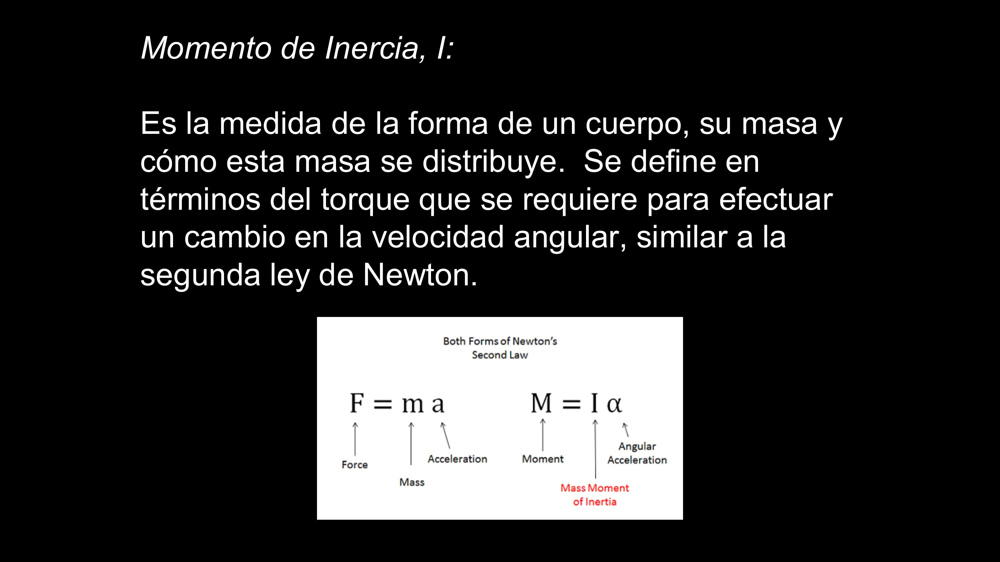
La consecuencia clave: la geometría molecular determina los momentos de inercia, y estos determinan los niveles rotacionales cuantizados:
- Metano (CH₄): tetraedro perfectamente simétrico — da lo mismo en qué eje lo hagas rotar, los tres momentos de inercia son iguales (IA = IB = IC).
- Clorometano (CH₃Cl): cambia un H por un Cl (mucho más pesado) y la simetría se rompe — «es como cambiarle una pieza del juguete por una más pesada: ya no da lo mismo cómo lo hagas girar». (Alguien en la clase: «como una lavadora desbalanceada».)
- Agua (H₂O): molécula angular — tres momentos de inercia distintos, uno por eje.
El mensaje del profesor no es memorizar qué molécula tiene qué momentos («jamás les preguntaría eso»), sino incorporar la idea: importan los átomos que tiene la molécula y la forma en que están dispuestos. Con moléculas grandes (cadenas de hidrocarburos con anillos, enlaces dobles y triples, isómeros) la cosa se complica rápidamente — es el campo de la espectroscopía molecular.
El momento de inercia es un hash de la estructura: condensa composición (masas) y disposición (geometría) en pocos números que determinan el espectro rotacional. Dos moléculas con distinta estructura producen «hashes» distintos → espectros distintos → identificables. Es la base de que el espectro funcione como huella digital.
El espectro roto-vibracional: ramas P, Q y R
«La diapo más técnica del módulo» — vibración y rotación acopladas.
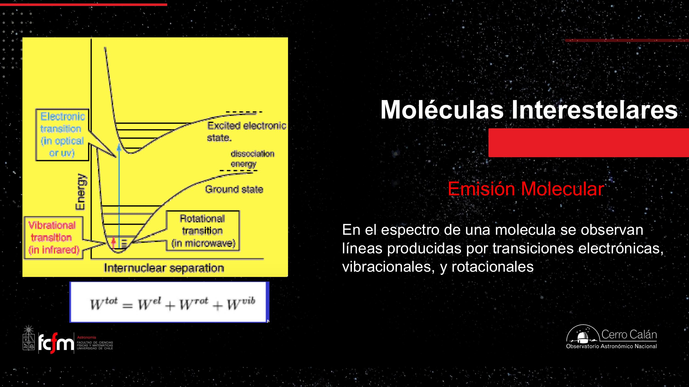
En una molécula diatómica (la más simple posible — el CO, por ejemplo) la única vibración posible es cambiar el largo del enlace. Y aquí viene el acoplamiento elegante:
- La vibración cambia el largo del enlace…
- …lo que cambia la distribución de masas → cambia el momento de inercia…
- …lo que cambia la energía rotacional → se gatillan transiciones rotacionales.
Por eso las moléculas generan un espectro roto-vibracional: las transiciones vibracionales y rotacionales vienen entrelazadas. Para una diatómica que sufre una transición vibracional Δv = 1, el número cuántico rotacional puede variar ΔJ = ±1:
| Regla | Rama | Qué se ve |
|---|---|---|
| ΔJ = −1 | Rama P | Serie de líneas hacia un lado de la transición vibracional pura |
| ΔJ = +1 | Rama R | Serie de líneas hacia el otro lado |
| ΔJ = 0 | Rama Q | Debería ser una sola línea (transición vibracional pura), pero en la práctica son varias porque la vibración no es perfectamente armónica |
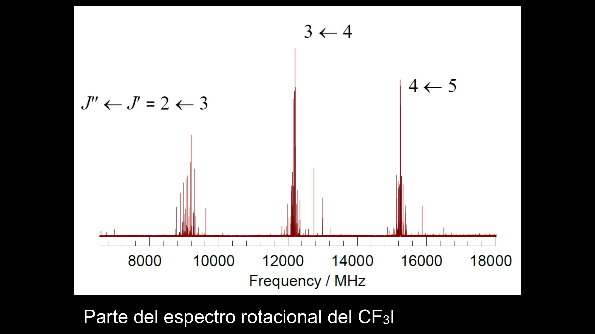
Bandas, no líneas — y la huella digital
A diferencia de las líneas atómicas (un electrón: una línea), las moléculas generan bandas moleculares: el conjunto P + Q + R que, con poca resolución espectral, se ve como una sola línea gruesa o «lomo». Cada compuesto tiene su patrón único — su huella digital — y todo se puede calcular y catalogar en librerías espectrales.
Una sola línea no basta — donde aparece el metanol puede aparecer otra especie. La confirmación es por patrón: si esto es metanol, tiene que haber otra banda suya en tal otra frecuencia; se busca, y si está (y la del candidato rival no), confirmado. Igual que con el hidrógeno atómico: Hα sola no prueba nada, pero Hα + Hβ + Hδ en sus posiciones exactas, sí. Hace 20 años esto se hacía semiautomático (el astrónomo marcaba líneas de CO a ojo y el computador verificaba el resto); hoy lo hace el software — y cada vez más la inteligencia artificial.
El salto rotacional J=1→0 del CO emite un fotón de λ = 2,6 mm. Chiquitito en energía, enorme comparado con la luz visible (~500 nm): unas 5.000 veces más largo. Es la línea con que se mapea el gas molecular de las galaxias.
La identificación de moléculas en un espectro es pattern matching contra una base de datos: las librerías espectrales son la tabla de firmas, el espectro observado es el input, y la confirmación exige múltiples matches consistentes (como un antivirus que no se conforma con una coincidencia parcial). Las «degeneraciones» (dos especies que comparten una línea) se resuelven consultando las demás líneas predichas — un join con más columnas.
~150 moléculas: del CO a los fulerenos
El censo de la química interestelar.
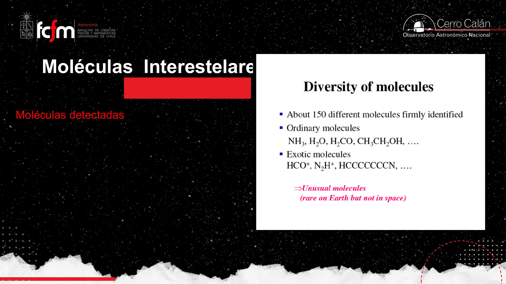
- «Firmemente identificadas» es la palabra clave: si no se encuentran las demás líneas del patrón a mayor y menor energía, la detección no se confirma.
- Los catálogos se organizan por número de átomos: diatómicas, de 3, de 4… hasta moléculas de más de 12 átomos.
- Las más grandes conocidas: los fulerenos (C₆₀, C₇₀) — «pelotas de fútbol» de 60–70 átomos de carbono, encontradas en material eyectado por estrellas.
- El grafito o el hidrógeno molecular muestran que «molécula» no exige elementos distintos: carbono puro o hidrógeno puro en estado molecular tienen propiedades (y espectros roto-vibracionales) propios.
- Detecciones notables: moléculas con deuterio (OD detectado con SOFIA — el deuterio es hidrógeno «pesado»: un protón + un neutrón, sigue siendo hidrógeno), hidrocarburos aromáticos policíclicos (PAHs, que emiten en el IR), aniones (iones negativos), anillos como el benceno — todo un problema explicar cómo se forman anillos a densidades tan bajas.
Los niveles rotacionales más bajos de las moléculas simples tienen energías equivalentes a 0,1–100 K — exactamente el rango de temperaturas de las nubes densas y frías, que no emiten líneas atómicas. Por eso las líneas moleculares son los únicos trazadores de las condiciones físicas de las nubes moleculares: termómetros y densímetros del material del que nacen las estrellas.
Las combinaciones de niveles son enormes, pero la huella espectral de un compuesto es única y predecible desde la mecánica cuántica: se puede calcular dónde caerá cada línea del metano — y también medirlo en laboratorio, porque «uno siempre quiere saber qué tal la teoría».
Astroquímica y las moléculas de la vida
Agua, carbono ionizado, aminoácidos: la frontera biológica de la astroquímica.
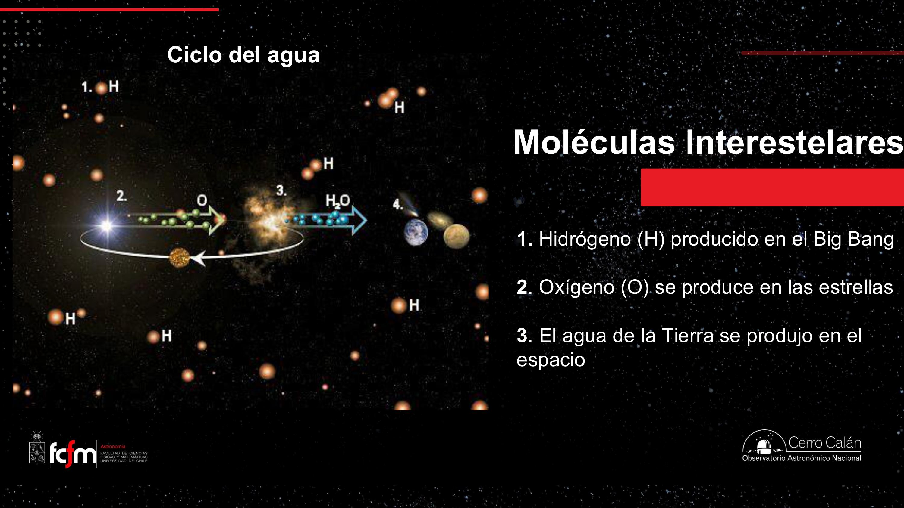
- El agua se forma en nebulosas planetarias: el material eyectado es relativamente denso comparado con el medio interestelar (la estrella estaba a ~10²⁴ partículas/cm³; expandido sigue siendo «denso» en términos interestelares), y los átomos de C, N, O recién fabricados empiezan a combinarse ahí.
- [CII] a 158 micrones: el carbono ionizado (C⁺) tiene una transición de estructura fina de su último electrón — análoga al cambio de spin que da la línea de 21 cm del hidrógeno — que se detecta en emisión a 158 µm. Es la herramienta estándar para estudiar carbono ionizado en zonas difusas.
- Herschel en Orión identificó decenas de moléculas orgánicas: dióxido de azufre, metanol, cianuro de hidrógeno, formaldehído, agua… y muchas líneas siguen sin identificar.
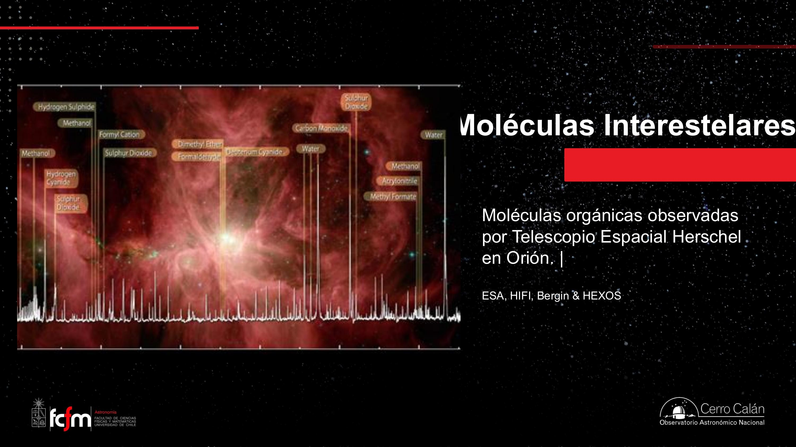
Las moléculas con importancia biológica
- Formamida, formaldehído y cianuro de hidrógeno: precursores de aminoácidos, nucleobases, azúcares y lípidos.
- Glicina (el aminoácido más simple: una amina NH₂ de la familia del amoníaco + un grupo ácido COOH): reportada pero aún cuestionada — se detectó una señal pero no las demás líneas del patrón. Lo mismo la dihidroxiacetona (el azúcar más simple). Confirmarlas sería demostrar que los ladrillos de la vida se fabrican en el espacio.
- Etanolamina (NH₂CH₂CH₂OH, detectada en 2018, confirmada): la «cabeza» más simple de los fosfolípidos — los ladrillos de las membranas celulares.
- Ácido carbónico (HOCOOH): la primera molécula interestelar con tres átomos de oxígeno.
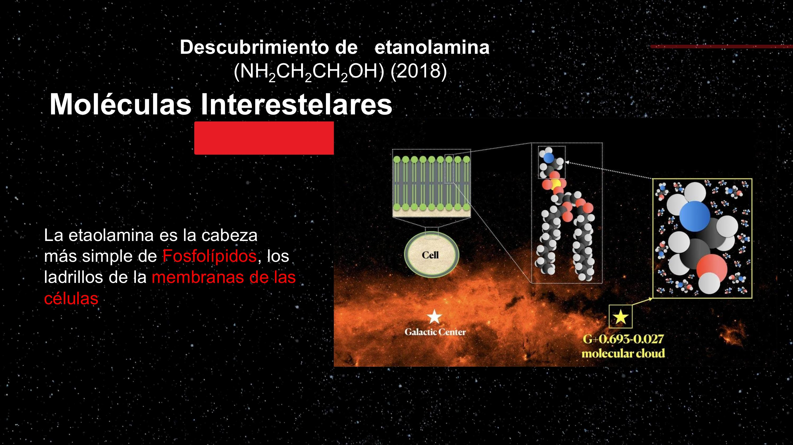
Pregunta de estudiante a propósito de un curso de Guido Garay: ¿podría ser que los precursores del ADN/ARN ya existieran en el espacio? La respuesta: los aminoácidos (~22 que forman proteínas) y las bases del ADN son el objetivo de búsqueda activa. Hay señales de glicina (no confirmada), etanolamina confirmada, y muchas moléculas con aminas y grupos ácidos. La química prebiótica en el espacio es un campo abierto y muy vivo.
Coda: oxígeno en el universo bebé
Detecciones de ALMA a la mayor distancia — y la pregunta del huevo y la gallina.
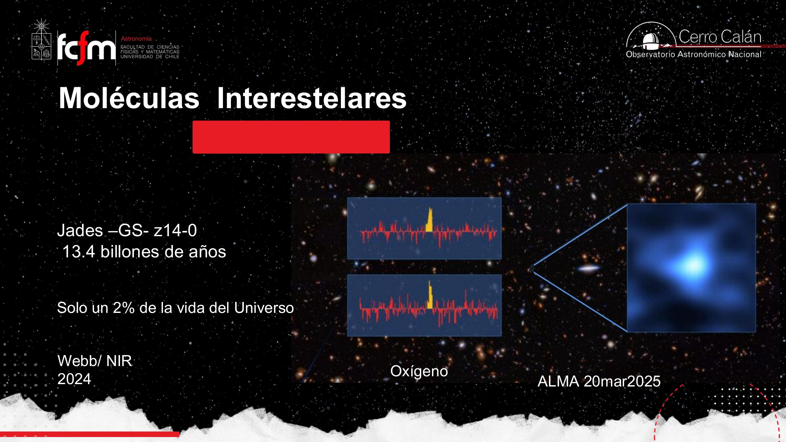
El cierre conecta nucleosíntesis, química y cosmología: si ALMA ve oxígeno (y antes lo vio en MACS1149-JD1, a ~13,3 mil millones de años luz), significa que ya a esa edad temprana había estrellas que habían vivido, fabricado oxígeno y muerto. La nucleosíntesis empezó casi inmediatamente.
¿Qué viene primero, la vibración o la rotación? Respuesta: ninguna es «causa» de la otra — ambas se excitan absorbiendo fotones o por choques, y una molécula aislada siempre tiende a su estado de menor energía: si está rotando, eventualmente se frena emitiendo esos fotones característicos; si está vibrando, lo mismo. Que veamos espectros moleculares significa precisamente que las moléculas se excitan (choques) y se frenan (emisión) una y otra vez. Como un átomo solito que decae a su estado fundamental — pero con tres escaleras de energía en vez de una.
«Llegamos a la última clase del módulo 2 de estrellas. Toda cosa buena llega a su fin.» El módulo 3 continúa con la evolución estelar — y el adelanto quedó hecho: gigantes rojas, triple alfa, enanas blancas, estrellas de neutrones.
Conceptos clave
Tabla de repaso rápido.
| Concepto | Qué es / valor | Por qué importa |
|---|---|---|
| Nucleosíntesis vs. química | Fabricar elementos (física nuclear) vs. fabricar moléculas (enlaces) | La identidad química la da el número de protones; la química nunca lo cambia |
| Proceso triple alfa | 3 ⁴He → ¹²C a 100–200 millones de K (núcleo de gigante roja) | Salta el muro de los núcleos inestables de masa 5 y 8; origen del C, N, O |
| Fred Hoyle | Acuñó «Big Bang» para burlarse; demostró la nucleosíntesis estelar | Quiso destruir el Big Bang y terminó explicando el origen de los elementos |
| Hidrógeno primordial | Todo el H del universo viene del Big Bang; ~74% H, ~25% He, ~2% metales | Las estrellas consumen H, no lo fabrican — «mírate al espejo» |
| Presión de degeneración electrónica | Los electrones no pueden compartir estado (Pauli); «asientos de auditorio» | Detiene el colapso → enana blanca; si la gravedad gana → estrella de neutrones |
| Nebulosa planetaria | Evaporación suave de las capas externas (gravedad superficial ∝ M/R²) | No es explosión; ahí se forman moléculas (incluida el agua) |
| Transiciones electrónicas | ~10 eV → visible/UV; niveles cuantizados (Bohr); H: 10,2 eV el primer salto, 13,6 eV ionizar | No ocurren en moléculas dentro de nubes (shielding + romperían el enlace) |
| Transiciones vibracionales | ~0,1 eV → infrarrojo; número cuántico v; una triatómica tiene 6 modos | ~100× menos energéticas que las electrónicas |
| Transiciones rotacionales | ~10⁻⁴ eV → microondas/radio; número cuántico J; requieren momento dipolar | ~1.000× menos que las vibracionales; CO J=1→0 a λ=2,6 mm |
| Momento de inercia (I) | Resistencia a rotar: masas + geometría; τ = Iα (análogo de F = ma) | La forma de la molécula fija sus niveles rotacionales (CH₄ simétrico vs. H₂O con 3 ejes) |
| Espectro roto-vibracional | Vibrar cambia el enlace → cambia I → gatilla rotaciones | Las moléculas generan bandas, no líneas |
| Ramas P, Q, R | ΔJ = −1 (P), 0 (Q), +1 (R) en una transición Δv = 1 | Anatomía de una banda molecular; la Q se desdobla porque la vibración no es armónica |
| Identificación por patrón | Una línea no basta: se confirman las demás líneas predichas (librerías) | Como Hα + Hβ + Hδ para el hidrógeno; hoy lo hace software/IA |
| ~150 moléculas confirmadas | De NH₃ y H₂O a HCO⁺, cadenas de C y fulerenos (C₆₀–C₇₀) | Líneas moleculares: únicos trazadores de nubes densas y frías (0,1–100 K) |
| [CII] 158 µm | Transición de estructura fina del carbono ionizado | Análoga a la línea de 21 cm del HI; traza zonas difusas |
| Ciclo del agua cósmico | H del Big Bang + O de las estrellas → H₂O formada en el espacio | El agua terrestre tiene origen interestelar |
| Moléculas prebióticas | Etanolamina (2018, fosfolípidos), ácido carbónico; glicina aún no confirmada | ¿Ladrillos de la vida sembrados desde el espacio? |
| Oxígeno a z alto | ALMA: MACS1149-JD1 (~13,3 Gyr) y JADES-GS-z14-0 (~13,4 Gyr, 2% de la edad del universo) | La nucleosíntesis estelar partió casi de inmediato tras el Big Bang |
Exámenes de práctica
10 exámenes de 5 preguntas (3 de alternativas autocorregibles + 2 de respuesta escrita).
- Examen 01Nucleosíntesis y triple alfa
- Examen 02Vidas y muertes estelares
- Examen 03Composición del ISM
- Examen 04Transiciones electrónicas
- Examen 05Vibración, rotación y energías
- Examen 06Momento de inercia
- Examen 07Ramas P, Q, R y bandas
- Examen 08Identificación de moléculas
- Examen 09Astroquímica y vida
- Examen 10Integrador